Summary
This note is part two of a series of three notes and it will cover mainly Financial Reporting.
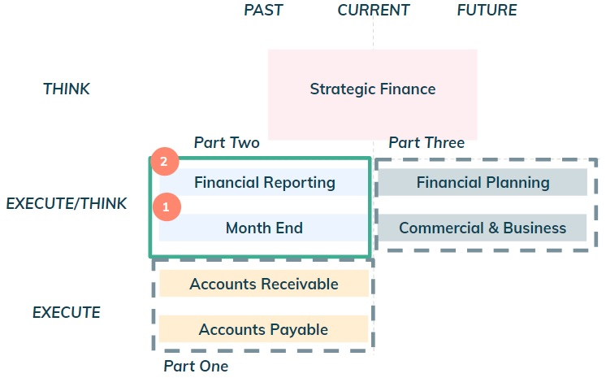 Figure 1: Series of three notes.The Building Blocks
Everything starts with what is called the chart of accounts as per the figure below.
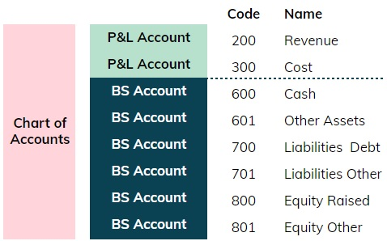 Figure 2: High level chart of accounts.
The chart of accounts consists of several accounts relating to P&L (revenues or costs)
and balance sheet (“BS”) items (assets, liabilities and equity). Each account has a unique
code (e.g 200) and a name (e.g revenues).
Whenever there is a transaction, a bookkeeper will use a dual entry system whereby it
will debit an account and credit another account. This means a positive number in one of
the accounts, and a negative number on the other account, so that the sum of both entries
is always zero.
Let's use an example for clarity. For a certain time period there are two transactions:
- Transaction #1: £100 of revenue recognised which was not received yet. P&L Account 200 (revenue) is credited with £100 and BS account 601 (other assets) is debited with £100
- Transaction #2: £20 of costs incurred but not paid yet. P&L Account 300 (cost) is debited with £20 and BS account 701 (Liabilities) is credited with £20
These two transactions would show up as below. Notice that each column always needs to add up zero. The total column is also known as “Trial Balance” or “TB”.
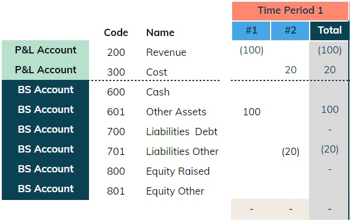 Figure 3: Example for two transactions in time period 1.Let's consider two more periods:
- Transaction #3: £50 of revenue recognised and received in period 2
- Transaction #4: £10 of costs incurred and paid in period 2
- Transaction #5: £75 debt incurred in period 3
- Transaction #6: £25 equity raised in period 3
The TB forms the basis of financial reporting as it can be used to derive the P&L and BS (see below). Note that within a fiscal year the TB is cumulative - TB3 would be used to determine P&L between period 1 & 3 and the BS at the end of period 3 (see tab "1.CoA" in this file).
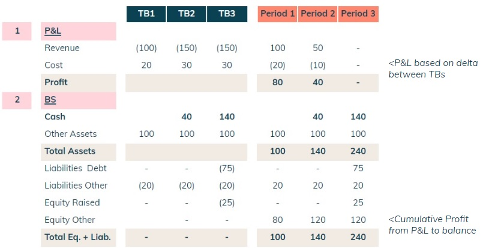 Figure 5: Using the TB to calculate the P&L and Balance Sheet.It is very important to bear in mind that one should also look at the cashflow statement to assess burn and not rely only on the P&L and Balance Sheet. This can be derived using the indirect method as explained in Dot #2: Cash Pays the Bills.
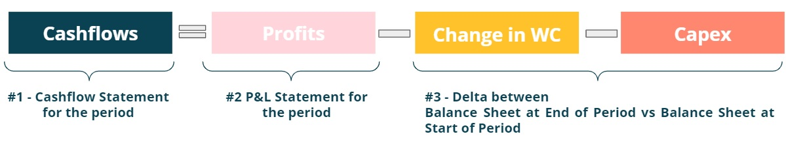 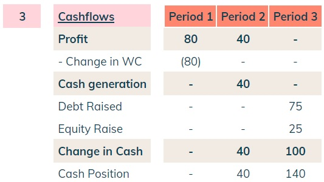 Figure 6: Calculating cashflows using the indirect method.Personally, I prefer to use the direct method and set up a cashburn report in the accounting system (e.g Xero) where I can get the cash revenues, cash costs and other cash items. I also have an independent cash tracker with all the inflows and outflows of each bank account and use it to cross check the cash position and cashburn.
The Matrix
A chart of accounts is not just 10 accounts as in the previous example.
In practice, there will be several revenue streams, costs and balance sheet items,
all of which will have a specific nature (and therefore account).
It should be as granular as necessary so that Financial Reporting can be used not only
to think about the business on a high level basis but also to support the details required
for Financial Planning. It is key that the financial reporting team (past) and FP&A teams
(future) are closely aligned on this.
The chart of accounts can be used to produce different types of reports using a
matrix: the vertical dimension being the accounts and the horizontal dimension
being different report formats (see example below).
In the above the “management” column would be used to produce a high overview of the P&L, whilst the “UK GAAP” would be used to produce accounts according to UK GAAP (used for audited financial statements).
Putting everything together
The figure below provides an overview of the key steps relating to month end and financial reporting.
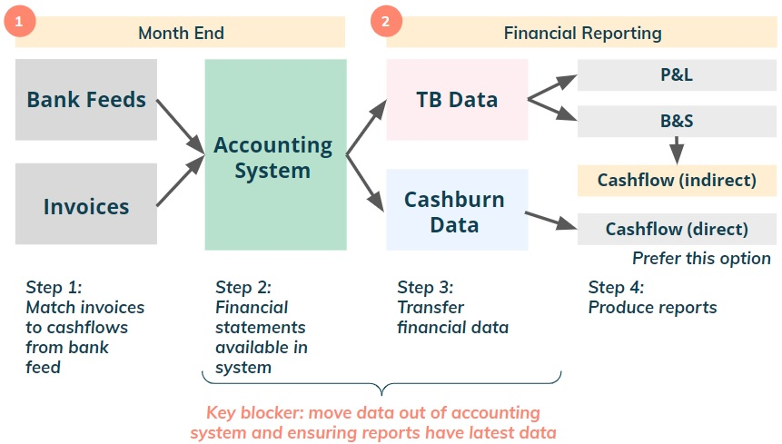 Figure 8: Month end and financial reporting processes.Month end: this refers to the process run each month, after the end of month, to ensure that all financial data (cashflows & invoices) are correctly set up in the accounting system.
- Step 1 should be fully automated to ensure a speedy preparation of financials with live bank feeds and automated AR & AP (see Dot #6: Operational Finance - Part One)
- If properly automated, the data should be in the accounting system immediately after the end of the month (except for missing invoices from suppliers). I suggest also running a checklist for quality control of numbers.
Financial reporting: once the data is properly set up in the accounting system (i.e. month end is done), the next step is to get the TB and cashburn data into a google sheet or some software to prepare “founder/investor” friendly reports or audited accounts. A key blocker here is moving data out of the accounting system automatically and ensuring reports have latest data, i.e. they are live and synchronised - more on this soon.
Let's go through an example. In the “matrix” tab here there is a simplified chart of accounts matrix step up - see figure fellow.
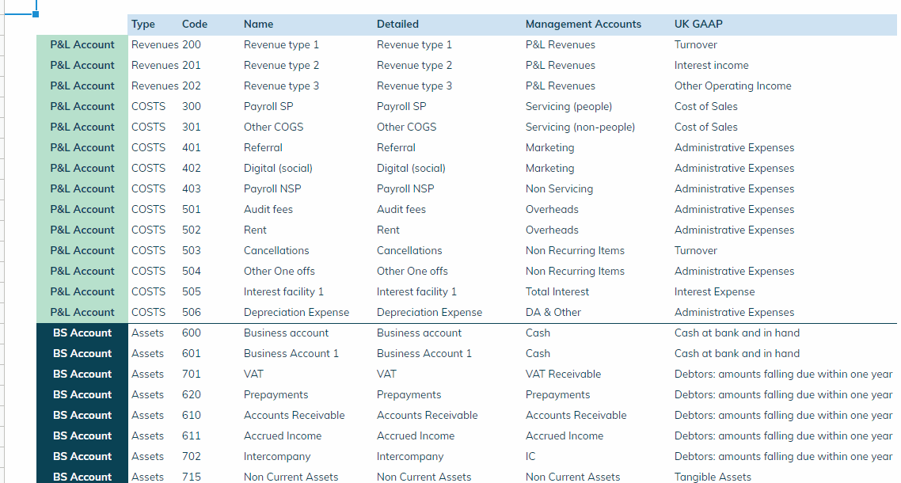 Figure 9: Simplified chart of accounts matrix.In the following tab “TB_Data” here I have built some dummy TB numbers for two years - 2021 and 2022. These are all in £ (i.e. not rounded in £000s or £millions) and notice that each column adds up to zero (otherwise there would be a mistake).
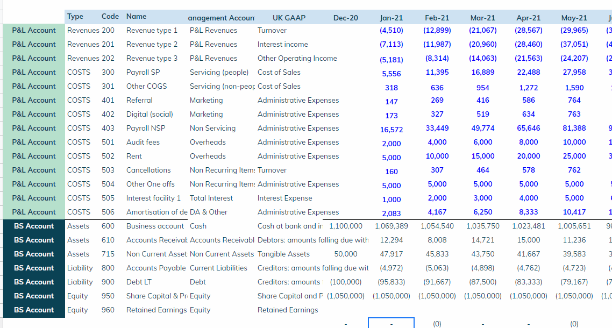 Figure 10: Raw trial balance data.The next step is to create an engine tab (see “TBEngine” here) to process the raw trial balance data. This entails two main tasks. Firstly, the detailed chart of matrix data is used to aggregate numbers into higher level categories. Secondly, the cumulative TB data is manipulated to calculate the P&L information for each month.
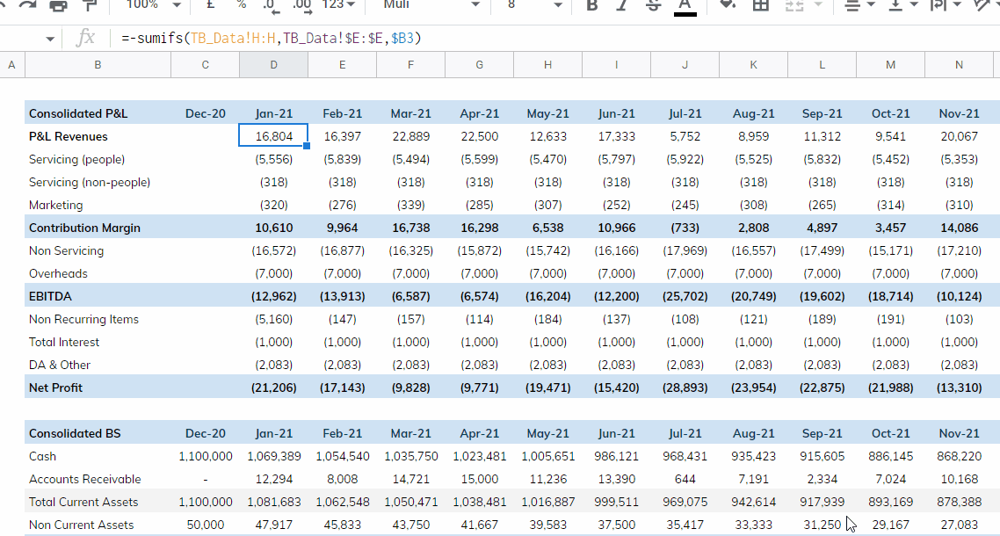 Figure 11: Engine to process trial balance data.Finally, the management accounts are automatically created using the data processed in the engine tab (see tab “Management Accounts” here). Notice how it is possible to i) automatically see the reporting in £ or £000s using the “factor” cell and ii) switch between monthly, quarterly or annually views.
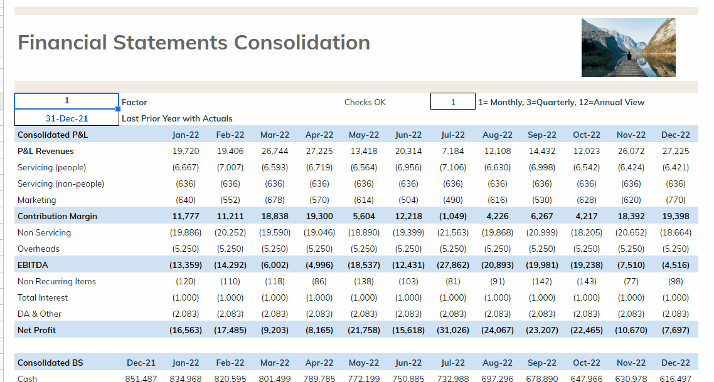 Figure 12: Management accounts.This process can be replicated to produce financial statements for a certain GAAP. Below is an example (simplified) for UK GAAP. I use this to cross check any number used in audited financial statements (see tabs “TBEngineGAAP” and “GAAP Accounts” here).
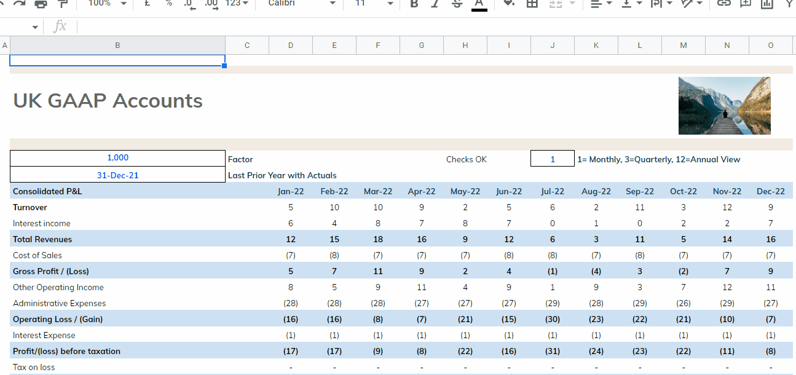 Figure 13: UK GAAP accounts.Automating the data transfer
There are two routes to automate the data transfer between the accounting system and
a google sheet.
First option is to get support from your engineering team to set up data pipes -
there will likely be push back on this option as engineering resources are typically scarce
(I have done a simple Google Apps script to link to Xero’s API which I will share in the future).
The second (easier) option is to search for a provider that can link to your accounting
system and move the data around. In my case, my accounting system is Xero and I use
G-accon
to automate the data transfer.
My financial statements are thus live and synchronised with Xero and not manual work is required from me.
Final Considerations
The above note assumes only one legal entity and one currency, which is the simplest case
possible. As a company scales, this will most likely not be the case and the accounting
system will need to be able to deal with multi-entities and multi-currency.
The principle remains the same though, i.e. replicate the process above for each
legal entity and ensure that there is a final layer to do the consolidation across the group.
The consolidation process can be fairly complex depending on the
volume of intercompany transactions. Furthermore, as some (most?)
accounting systems are not built to provide this layer relating to consolidation,
it may entail getting support from a specific software provider (e.g
MayDay).
If you require support or have any questions my contact is: